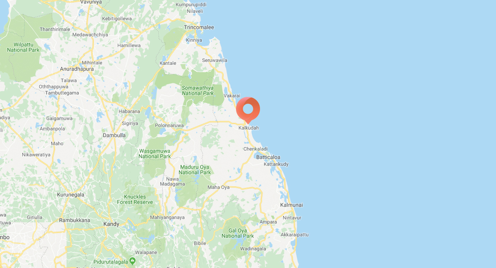

Located on the Eastern shores of Sri Lanka, Pasikudah is a coastal town that boasts of sandy white-gold beaches, gentle waves and azure blue waters that will mesmerise you. The area boasts of one of the longest shallow reef coastlines in the world that lets you walk into the ocean without fear. Grab a big sun hat, lather on some sunscreen and enjoy all the fun of a tropical beach side.

While in Pasikudah, there are a variety of things to do that is bound to relax and excite every type of traveller.